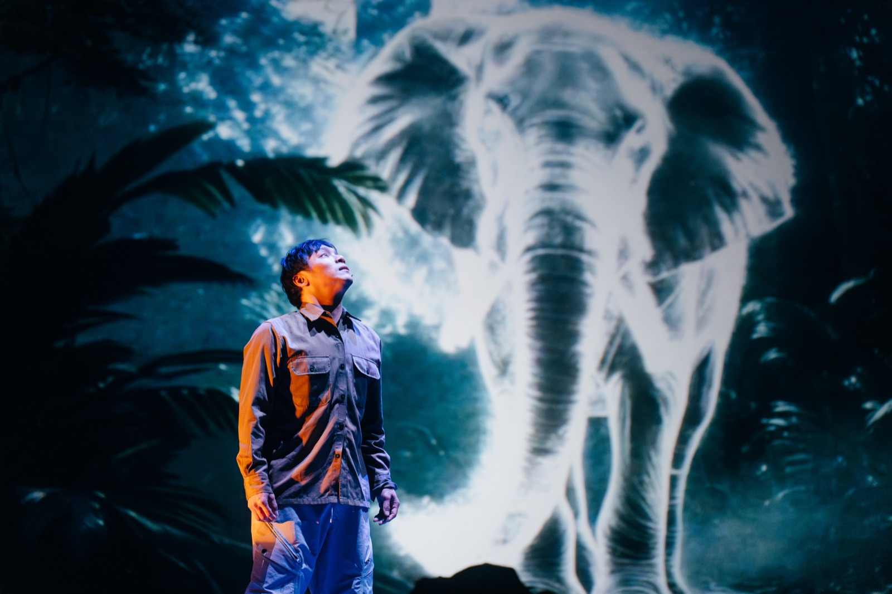
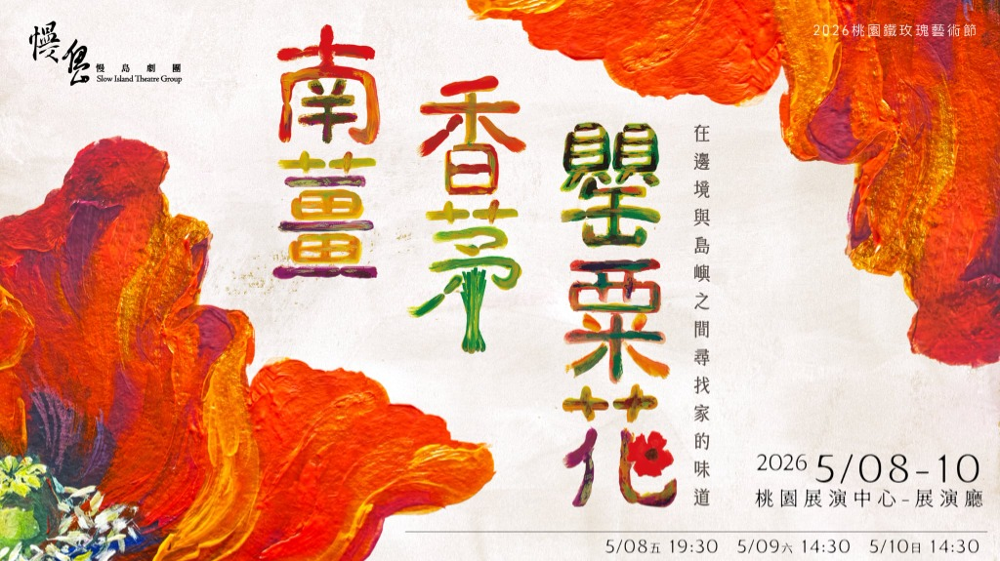
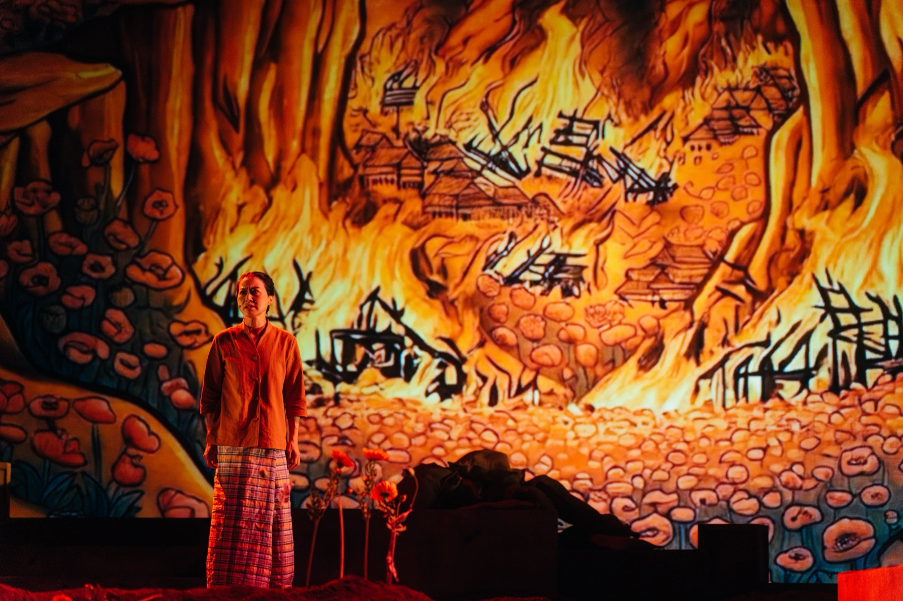
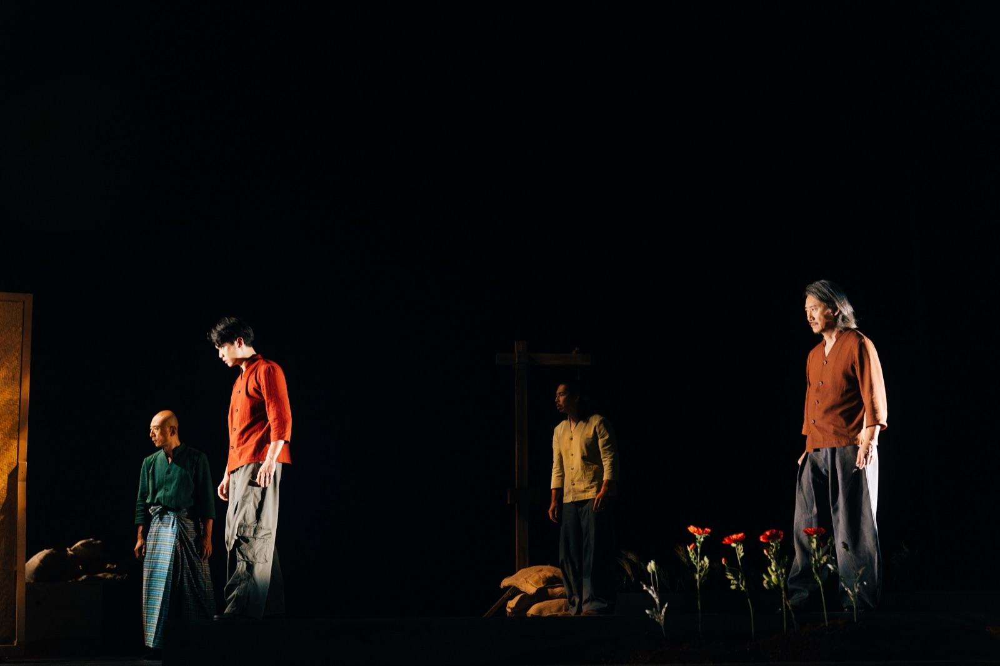
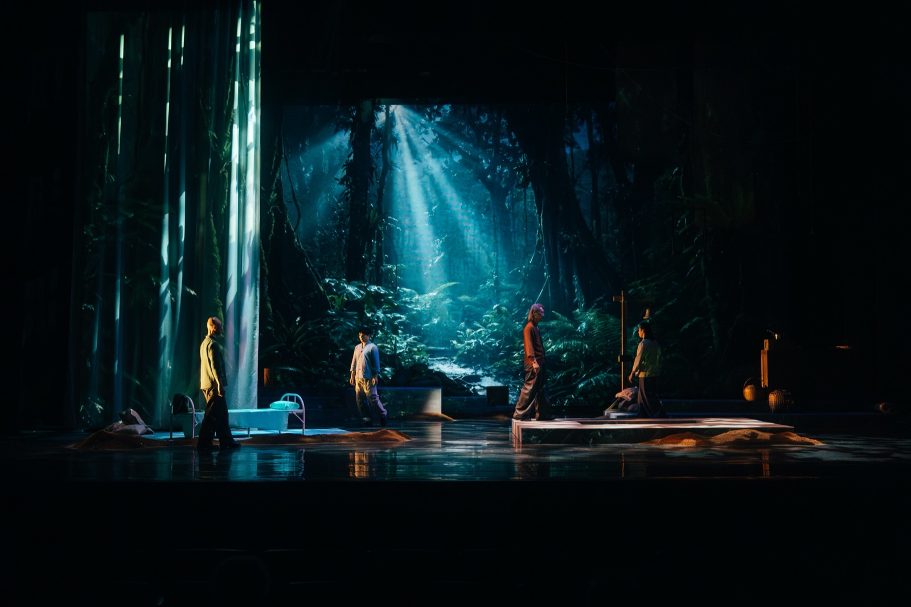
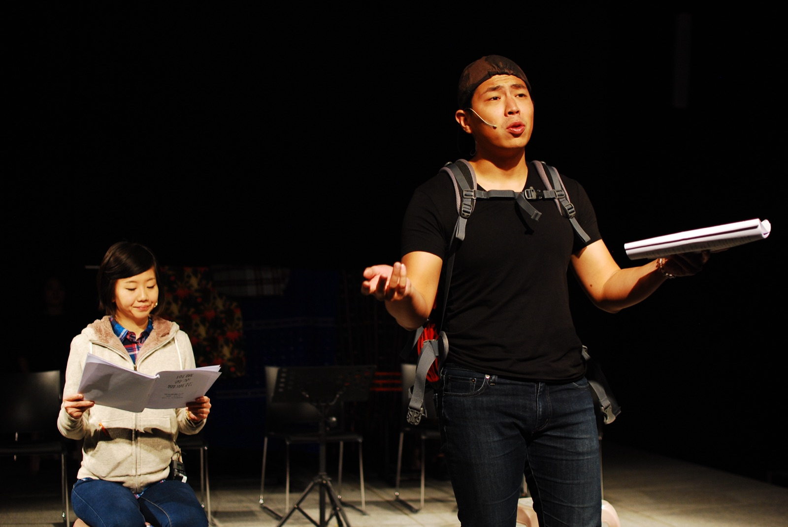
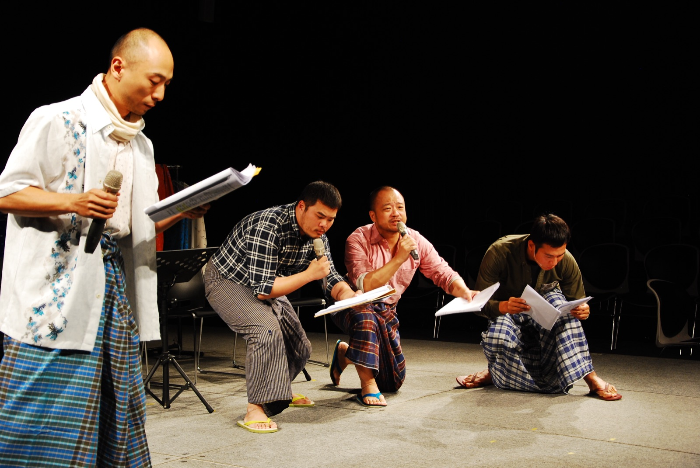
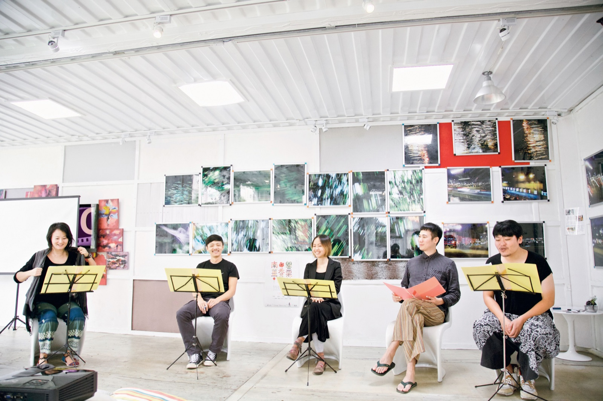

Slowing the rush of life — Unveiling theatre at the margins of everyday existence.
慢島劇團立足於台灣桃園，以「慢島」為號，打破典型黑盒子舞台的束縛。從卡拉OK店到常民廚房、從偏鄉小學到工廠廠房，我們用深刻的田野調查、多感官體驗與細膩表演，記錄屬於這座島嶼上最動人的生命記憶。
Based in Taoyuan, Taiwan, Slow Island Theatre breaks free from conventional black-box boundaries. From local karaoke bars to domestic kitchens, from remote rural schools to industrial factory floors, we weave in-depth ethnography, multi-sensory immersion, and nuanced performance to document the island's most poignant human memories.
創團年份 Founded
原創代表作 Original Works
全台巡演深耕 Nationwide Tours

🔍 查看劇目介紹 劇照攝影：唐健哲「在邊境與島嶼之間尋找家的味道」 "Searching for the Taste of Home Between Borders and Islands"
慢島劇團滇緬移民史與多元族群田調的重量級代表巨作

Poppy, Lemongrass and Galangal
「在邊境與島嶼之間尋找家的味道」 "Searching for the Taste of Home Between Borders and Islands"
《南薑．香茅．罌粟花》聚焦於台灣特殊的歷史肌理——長年生活於泰緬邊境、隨後落腳台灣的滇緬移民群體與跨世代新住民。
劇團以實地田野調查訪談為基石，將真實的家族食譜、香料氣味與廚房聲響融入劇場。舞台上不只說故事，更在當下烹煮回憶，讓歷史的顛沛流離轉化為撫慰人心的常民生命力。
Poppy, Lemongrass and Galangal illuminates Taiwan’s unique historical fabric—the Yunnanese-Burmese communities who endured along the Thai-Myanmar border before settling in Taiwan, alongside multi-generational new immigrants.
Grounded in authentic fieldwork, family recipes, aromatic spices, and kitchen soundscapes are brought onto the stage. More than recounting stories, the company simmers living memories before our eyes, transmuting diaspora into a warm celebration of everyday resilience.
“從飲食、血脈、離散與家的定義切入，深度探討滇緬跨世代移民的生命歸宿、歷史傷痕與身分認同。”
“這部作品如同一鍋反覆熬煮的湯，每一次重演與修訂，都是將記憶重新撈起，讓那些尚未說完的故事逐漸沉澱、成形。”
“橫跨中、緬、泰、台四國邊境，跨越三代人的生命溯源史詩，以料理香氣與家族記憶重構當代舞台。”
“深入解析慢島劇團《南薑．香茅．罌粟花》如何以料理香氣與物件劇場，跨越四國三代人的遷徙歷程。”
“從味覺記憶出發，溫柔訴說被掩蓋的故事。記錄排練現場與慢島劇團如何藉由料理氣味喚起被主流歷史遮蔽的常民生命記憶。”
“「獻給想理解我們從何而來的你。」藉由追尋父親味道的旅程，踏上一條橫跨雲南、緬甸、泰國到臺灣的華人移民史。”
“鐵玫瑰藝術節15周年焦點節目報導，聚焦慢島劇團深刻的田調力量，探索多元族群文化與歷史記憶。”
“慢島劇團年度重點大戲，融合現場料理香氣與滇緬移民深刻田調，引領觀眾走進歷史與常民生命現場。”
“橫跨中、緬、泰、台四國邊境，跨越三代人的生命溯源史詩，以料理香氣與家族記憶重構當代舞台。”
“深度專訪編導姜富琴，剖析十年創作拓墾歷程，如何由家族食譜出發，在歷史的巨大縫隙中為無名流離者尋找個體的歸途。”
收錄 2026 桃園鐵玫瑰藝術節焦點主推、2016 經典演出與 2014 讀劇經典珍貴歷史影像

那些邊境山村的故事



2016 演出
2016 演出 2014 讀劇
2014 讀劇
 2014 讀劇
2014 讀劇
 2014 讀劇
2014 讀劇

2014 讀劇「慢島劇團」由團長王珂瑤於 2008 年在桃園創立。取名「慢島」，源自於對台灣當代社會快速、焦慮步調的反思。我們期許透過藝術創作，為現代人帶來深呼吸與放慢腳步的可能。
劇團長期深耕桃園多元文化土壤，作品形式跨越傳統鏡框式舞台，經常將戲劇帶進卡拉OK店、百年古蹟、稻田、工廠與偏鄉校園。我們相信，生活在哪裡發生，劇場就在那裡長出力量。
Founded in 2008 in Taoyuan by Artistic Director Wang Ke-Yao, "Slow Island Theatre" reflects upon the rapid, anxious pace of contemporary society, creating artistic spaces to breathe and slow down.
Rooted in Taoyuan's multicultural soil, our work steps beyond traditional proscenium arches into karaoke lounges, historic sites, rice fields, factories, and rural campuses. We believe that wherever life unfolds, theatre takes root and finds power.

「劇場不該只是少數菁英走進殿堂的消遣，而是走入市井、陪伴常民討論艱澀或被遺忘議題的溫柔力量。」
"Theatre should not be a privileged diversion within grand halls, but a gentle force walking everyday streets to accompany citizens in confronting forgotten narratives."
打破傳統劇院的「第四面牆」，直接走入卡拉OK店、眷村聚落與非典型空間，讓觀眾與演員身處同一片真實空氣中呼吸。
Breaking the conventional "fourth wall," stepping into karaoke parlors, military dependents' villages, and non-theatrical spaces where audiences and performers share the very same living air.
深耕滇緬邊境移民史、東南亞移工、基層勞動者與女性生命經驗，將被主流宏大敘事遺忘的常民記憶化為生動戲劇。
Grounding in deep ethnographic fieldwork across Yunnanese-Burmese diaspora, migrant workers, frontline labor, and women’s oral histories to transmute forgotten memories into vibrant living theatre.
大膽引入「嗅覺氣味」（如《鼻子記》）、現場料理香氣與聲音共振（如《混血振動》），挑戰觀眾全方位的感知極限。
Audaciously introducing olfactory scents (e.g., The Nose), live culinary aromas, and acoustic resonance (e.g., Hybrid Vibration) to challenge the full sensory spectrum of perception.
以精緻偶戲巡演全台偏鄉小學與社區（如《妮妮的小祕密》），推廣身體自主權教育與藝術平權工作坊。
Touring remote elementary schools and grassroots communities nationwide with exquisite puppetry (e.g., Nini's Little Secret), advancing bodily autonomy education and arts equity workshops.
完整收錄歷年 17 部經典製作之劇情簡介、演職人員名單、舞台精采劇照、專文劇評報導與精采片花
Explore in-depth storylines, complete creative cast & production credits, stage photography archives, critical press reviews, and performance videos across all 17 productions.
從南薑與香茅的炊煙、卡拉ＯＫ裡的實景演出、物品劇場裡的戰後硝煙，收錄慢島劇團歷年演出的珍貴舞台瞬間與光影記憶。
From the aromatic steam of poppy, lemongrass and galangal to immersive karaoke dramas and the post-war smoke of object theatre — explore evocative stage moments from Slow Island’s repertoire.
圍聚於廚房餐桌前的滇緬移民二代，在香料蒸騰中重尋家族根源。
由慢島劇團邀請身兼編劇、製作、導演綜合身分的 陳雅柔 進行深度專題採訪，編排：羅靖茹。
深入探討劇場工作者在經濟現實下的生存狀態與心理調適，直面「如何平衡現實與夢想」，為年輕劇場工作者分享實戰心法與生存指引。
In-depth feature interviews with theatre multi-hyphenate Chen Ya-Rou, curated by Lo Ching-Ju — confronting economic realities, psychological resilience, and the delicate balance between artistic dreams and survival.
✦ 系列專題文章同步於慢島劇團 Facebook、官方 Blog、牯嶺街小劇場社群、葫蘆樂園：劇場發聲報、嚷嚷社等跨平台交流刊載。
走進排練場、卡拉OK與劇場後台，收錄慢島劇團歷年 17 齣經典劇目預告、現場演出實況與劇團紀錄。點擊卡片或按鈕即可直接連往 YouTube 官方影片觀看。
Step into rehearsal rooms, karaoke parlors, and backstages. A comprehensive collection of trailers, live performance recordings, and documentary footage across Slow Island's repertoire. Click any card or button to watch directly on YouTube.
歡迎各地藝文中心、學校、非典型空間邀約巡演合作
Tour schedules, school outreach, and site-specific collaborative commissions.
歡迎任何形式的演出邀約、校園推廣、空間合作或媒體採訪。請填寫右側表單或直接透過官方管道與我們聯繫。
We welcome touring inquiries, educational outreach, site-specific collaborations, and press interviews. Reach out to collaborate with us.
歡迎各界填寫需求，我們將於 2-3 個工作天內主動回覆